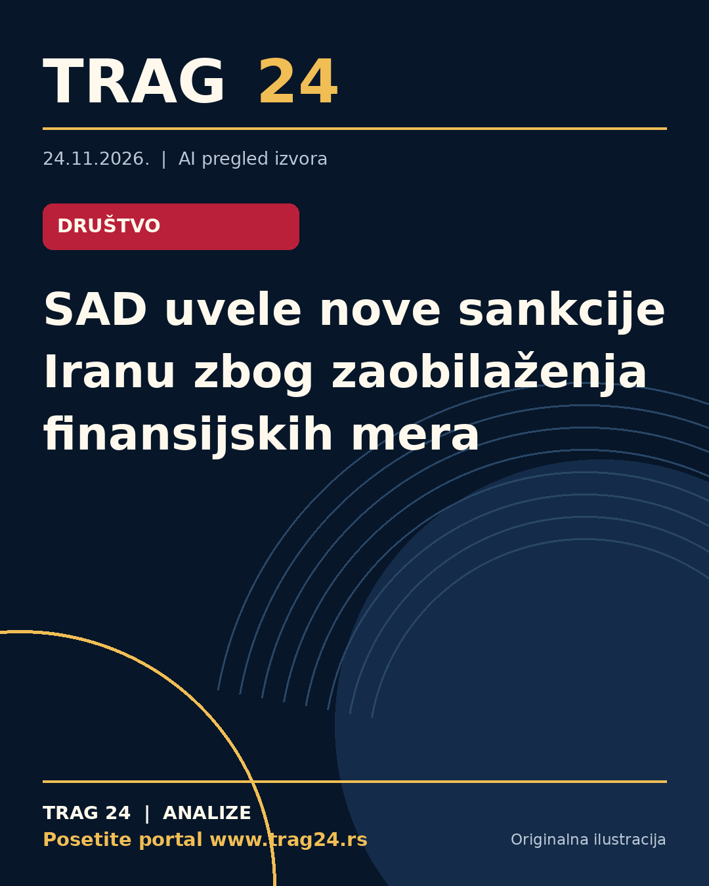

SAD uvele nove sankcije Iranu zbog zaobilaženja finansijskih mera

ŠTA SE DOGODILO
Administracija američkog predsednika Donalda Trampa uvela je nove sankcije koje ciljaju desetine iranskih pojedinaca i kompanija, uključujući menjačnice i fiktivne firme. Ove mere su deo pojačanih napora SAD da izoluju Iran od globalnog finansijskog sistema i razbiju njegove mreže zaobilaženja sankcija.
HRONOLOGIJA
Ministarstvo finansija SAD saopštilo je o novim sankcijama u periodu nakon januara 2025. do avgusta 2026. godine. U istom periodu, mreža FinCEN je identifikovala gotovo 15 milijardi dolara finansijskih transakcija koje bi mogle biti povezane sa paralelnim iranskim bankarskim sistemom. Sankcije su usmerene na firme sa sedištem u Ujedinjenim Arapskim Emiratima, Turskoj i Hongkongu, kao i na pojedince povezane sa njihovim radom.
ŠTA NAVODE IZVORI
Izveštaji potvrđuju da je iranski paralelni bankarski sistem koji nadgleda Centralna banka Irana oslonjen na menjačnice i kompanije koje omogućavaju zaobilaženje sankcija. Američki ministar finansija Skot Besent je ocenio da je iranska ekonomija pogođena, dok se aktivnosti ove finansijske mreže delimično smanjuju, iako ostaju prisutne, posebno u UAE, Hongkongu i Singapuru, u sektorima nafte, pomorskog transporta i investicija.
ŠTA JE POTVRĐENO
Potvrđeno je da su sankcije usmerene na desetine pojedinaca i firmi koje podržavaju iransku spoljnu trgovinu i da su ove mere deo američke strategije pritiska na iransku ekonomiju i finansijske tokove. Takođe, potvrđeno je da je obim ovih finansijskih aktivnosti smanjen u posmatranom periodu, što može značiti oslabljenu sposobnost Irana da održava svoje mreže.
ŠTA NIJE POTVRĐENO
Nije potvrđeno da su sankcije dovele do potpunog prekida iranskog paralelnog bankarskog sistema niti njihova dugoročna efikasnost. Nema nezavisnih potvrda van američkih izvora o detaljima oštećene mreže i ukupnim ekonomskim posledicama po Iran.
ŠTA OSTАJE OTVORENO: Ostaje nejasno koliko će sankcije dugoročno uticati na iranske finansijske tokove i da li će Iran uspeti da razvije nove načine zaobilaženja mera. Takođe, ostaje neizvesno kako će zemalja kao što su Ujedinjeni Arapski Emirati, Turska, Hongkong i Singapur reagovati na nove američke pritiske u vezi sa ovim sankcijama.
Izvori
- https://www.telegraf.rs/vesti/svet/4438478-sankcije-iranu-sad-uvode-nove-mere-protiv-finansijskih-mreza-teherana
- https://insajder.net/prenosimo/sad-uvele-nove-sankcije-iranu-na-meti-desetine-pojedinaca-i-kompanija
Ova analiza je pripremljena uz pomoć veštačke inteligencije na osnovu javno dostupnih izvora. Navodi izvora nisu nužno nezavisno potvrđeni.